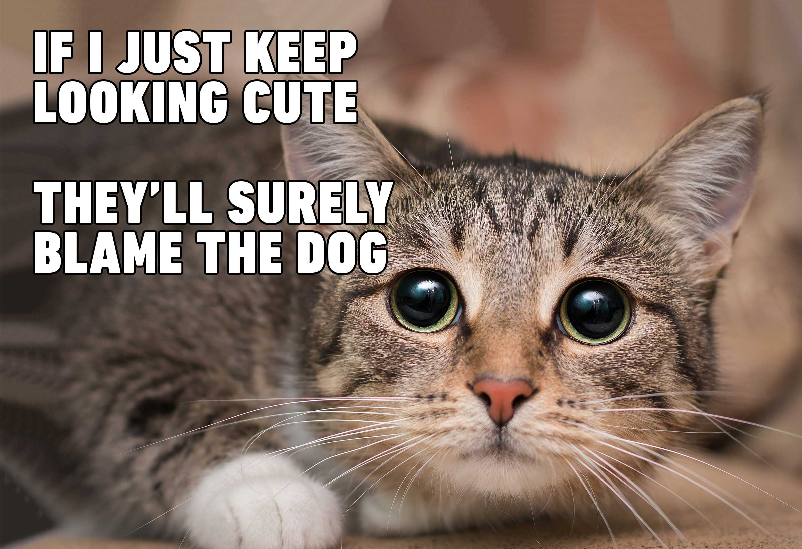

Cats, also called domestic cats (Felis catus), are small, carnivorous mammals, of the family Felidae. Domestic cats are often called 'house cats' when kept as indoor pets. Cats have been domesticated (tamed) for nearly 10,000 years. They are one of the most popular pets in the world.

Dogs (Canis lupus familiaris) are domesticated mammals, not natural wild animals. They were originally bred from wolves. They have been bred by humans for a long time, and were the first animals ever to be domesticated. ... Dogs eat both meat and vegetables, often mixed together and sold in stores as dog food.